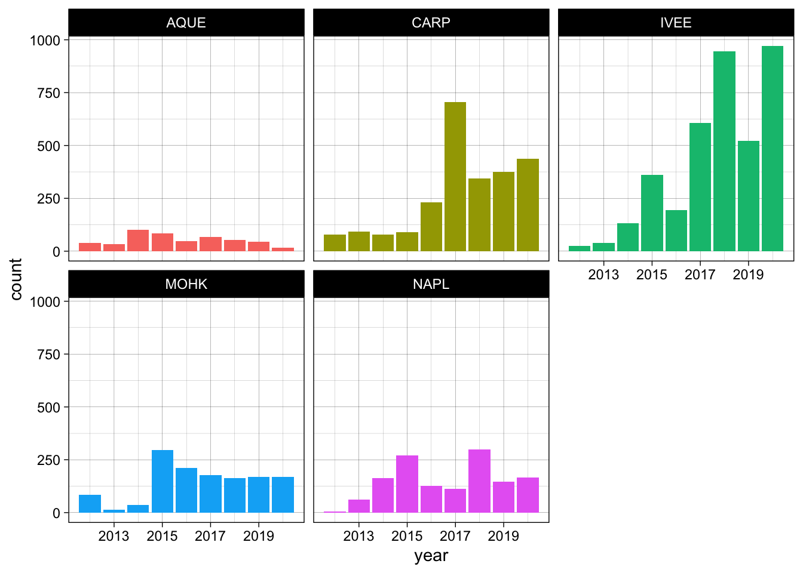
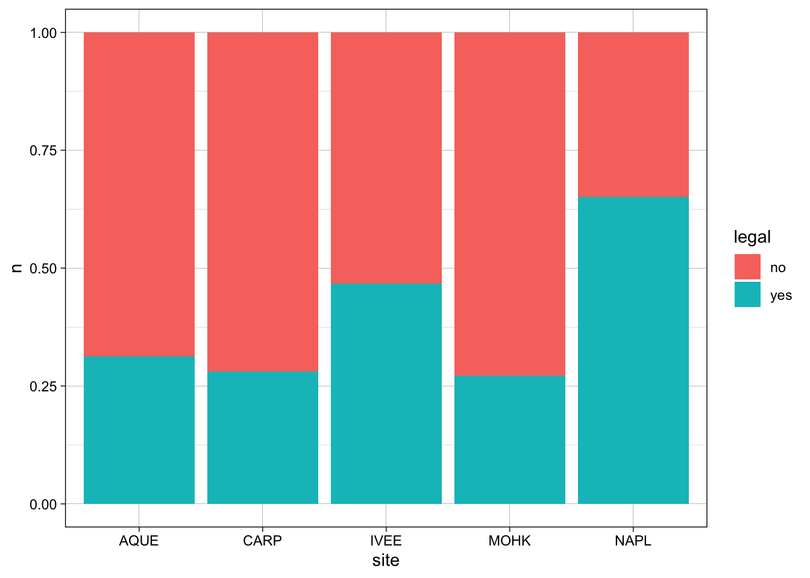

library(tidyverse)
library(here)Day 6 Activity
Data Organization in Spreadsheets
- people are often not consistent with their naming
- choose clear names that are easy for a computer to read as well
- YYYY-MM-DD is a good standard
- don’t have empty cells- put NA (and be consistent with how you note NAs)
- don’t do calculations in the raw excel file
SBC Lobsters
lobster <- read_csv(here("data", "Lobster_Abundance_All_Years_20210412.csv"), na = c("-99999", "")) %>%
janitor::clean_names() %>%
uncount(count)mean_count <- lobster %>%
group_by(site, year) %>%
summarise(mean = mean(size_mm),
count = n())ggplot(mean_count, aes(year, count, fill = site)) +
geom_bar(stat = "Identity") +
facet_wrap(~site) +
theme_linedraw() +
theme(legend.position = "none")
Legal Lobsters
lobster_2020 <- lobster %>%
filter(year == 2020)
lobster_2020_legal <- lobster_2020 %>%
group_by(site) %>%
mutate(legal = case_when(size_mm > 79.76 ~ "yes",
size_mm <= 79.76 ~ "no")) %>%
count(legal)ggplot(lobster_2020_legal, aes(site, n, fill = legal)) +
geom_col(position = "fill") +
theme_linedraw()
Lobster Wrangling
ex_a <- lobster %>%
filter(site %in% c("IVEE", "CARP", "NAPL"))
ex_b <- lobster %>%
filter(month == 8)
ex_c <- lobster %>%
filter(site == "AQUE" | size_mm > 70)
ex_d <- lobster %>%
filter(site != "NAPL")group_by() and summarise() practice
lobster %>%
group_by(site) %>%
summarise(mean = mean(size_mm, na.rm = TRUE),
sd = sd(size_mm, na.rm = TRUE))# A tibble: 5 × 3
site mean sd
<chr> <dbl> <dbl>
1 AQUE 72.7 11.1
2 CARP 74.0 15.9
3 IVEE 75.7 13.8
4 MOHK 68.4 13.3
5 NAPL 79.6 11.5lobster %>%
group_by(site, month) %>%
summarise(max_length = max(size_mm, na.rm = TRUE))# A tibble: 7 × 3
# Groups: site [5]
site month max_length
<chr> <dbl> <dbl>
1 AQUE 8 109
2 AQUE 9 100
3 CARP 8 600
4 IVEE 8 193
5 IVEE 9 107
6 MOHK 8 110
7 NAPL 8 125mutate()
size_conv <- lobster %>%
mutate(size_cm = size_mm / 10)
lobster %>%
mutate(site = tolower(site))# A tibble: 9,387 × 9
year month date site transect replicate size_mm num_ao area
<dbl> <dbl> <date> <chr> <dbl> <chr> <dbl> <dbl> <dbl>
1 2012 8 2012-08-20 ivee 3 A 70 0 300
2 2012 8 2012-08-20 ivee 3 B 60 0 300
3 2012 8 2012-08-20 ivee 3 B 65 0 300
4 2012 8 2012-08-20 ivee 3 B 70 0 300
5 2012 8 2012-08-20 ivee 3 B 85 0 300
6 2012 8 2012-08-20 ivee 3 C 60 0 300
7 2012 8 2012-08-20 ivee 3 C 65 0 300
8 2012 8 2012-08-20 ivee 3 C 67 0 300
9 2012 8 2012-08-20 ivee 3 D 70 0 300
10 2012 8 2012-08-20 ivee 4 B 85 0 300
# ℹ 9,377 more rowslobster %>%
mutate(area = as.character(area))# A tibble: 9,387 × 9
year month date site transect replicate size_mm num_ao area
<dbl> <dbl> <date> <chr> <dbl> <chr> <dbl> <dbl> <chr>
1 2012 8 2012-08-20 IVEE 3 A 70 0 300
2 2012 8 2012-08-20 IVEE 3 B 60 0 300
3 2012 8 2012-08-20 IVEE 3 B 65 0 300
4 2012 8 2012-08-20 IVEE 3 B 70 0 300
5 2012 8 2012-08-20 IVEE 3 B 85 0 300
6 2012 8 2012-08-20 IVEE 3 C 60 0 300
7 2012 8 2012-08-20 IVEE 3 C 65 0 300
8 2012 8 2012-08-20 IVEE 3 C 67 0 300
9 2012 8 2012-08-20 IVEE 3 D 70 0 300
10 2012 8 2012-08-20 IVEE 4 B 85 0 300
# ℹ 9,377 more rowscase_when()
size_bin <- lobster %>%
mutate(size_bin = case_when(size_mm <= 70 ~ "small",
size_mm > 70 ~ "large"))
size_bin# A tibble: 9,387 × 10
year month date site transect replicate size_mm num_ao area size_bin
<dbl> <dbl> <date> <chr> <dbl> <chr> <dbl> <dbl> <dbl> <chr>
1 2012 8 2012-08-20 IVEE 3 A 70 0 300 small
2 2012 8 2012-08-20 IVEE 3 B 60 0 300 small
3 2012 8 2012-08-20 IVEE 3 B 65 0 300 small
4 2012 8 2012-08-20 IVEE 3 B 70 0 300 small
5 2012 8 2012-08-20 IVEE 3 B 85 0 300 large
6 2012 8 2012-08-20 IVEE 3 C 60 0 300 small
7 2012 8 2012-08-20 IVEE 3 C 65 0 300 small
8 2012 8 2012-08-20 IVEE 3 C 67 0 300 small
9 2012 8 2012-08-20 IVEE 3 D 70 0 300 small
10 2012 8 2012-08-20 IVEE 4 B 85 0 300 large
# ℹ 9,377 more rowslobster %>%
mutate(designation = case_when(site == "IVEE" | site == "NAPL" ~ "MPA",
TRUE ~ "not MPA"))# A tibble: 9,387 × 10
year month date site transect replicate size_mm num_ao area
<dbl> <dbl> <date> <chr> <dbl> <chr> <dbl> <dbl> <dbl>
1 2012 8 2012-08-20 IVEE 3 A 70 0 300
2 2012 8 2012-08-20 IVEE 3 B 60 0 300
3 2012 8 2012-08-20 IVEE 3 B 65 0 300
4 2012 8 2012-08-20 IVEE 3 B 70 0 300
5 2012 8 2012-08-20 IVEE 3 B 85 0 300
6 2012 8 2012-08-20 IVEE 3 C 60 0 300
7 2012 8 2012-08-20 IVEE 3 C 65 0 300
8 2012 8 2012-08-20 IVEE 3 C 67 0 300
9 2012 8 2012-08-20 IVEE 3 D 70 0 300
10 2012 8 2012-08-20 IVEE 4 B 85 0 300
# ℹ 9,377 more rows
# ℹ 1 more variable: designation <chr>